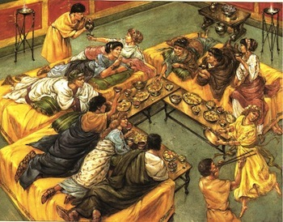

chapter7.1--handout
Background Information
Trimalchio (特里马尔乔)
...as obscurely as it had begun, his career as Trimalchio was over.（他作为特里马尔乔的生涯，当初莫名其妙地开始，现在又莫名其妙地结束了。）
Trimalchio（特里马尔乔）是罗马作家皮特罗尼斯作品《讽刺篇》中一个大宴宾客的暴发户（ a character in the 1st century AD Roman work of fiction Satyricon by Petronius）. 他原本是一个奴隶，被解放后通过自己的坚毅和努力得到权力和财富（freedman who through hard work and perseverance has attained power and wealth）. 他为人所知也是因为常常举办豪华的盛会宴请宾客（known for throwing lavish dinner parties）.
Trimalchio in West Egg也是Fitzegerald为这本书写的备选书名之一哦~

Awning (天蓬)
The room, shadowed well with awnings, was dark and cool. (这间屋子外面有这篷挡着，又阴暗又凉快。)
awning是指安置房子外墙上的用于遮阳或挡雨的天篷（a secondary covering attached to the exterior wall of a building）. 如下图↓
Vocabulary
simmer
vi. 炖；酝酿 (to boil gently)
原文：As my train emerged from the tunnel into sunlight, only the hot whistles of the National Biscuit Company broke the simmering hush at noon.
当我乘的火车从地道里钻出来驶进阳光里时，只有全国饼干公司热辣辣的汽笛打破了中午闷热的静寂。
💧simmering在这里指“酝酿已久的”。simmer原义是“炖，煨”，可以引申为“充满（难以控制的感情，尤指愤怒） ”，比如：She was still simmering with resentment.
她依旧憋着一肚子的怨恨。
relinquish
vt. 放弃；放开，松手；让出（权利，财产等）(to let someone else have your position, power, or rights)
原文：The child, relinquished by the nurse, rushed across the room and rooted shyly into her mother’s dress.
保姆一撒手，小孩就从屋子那边跑过来，羞答答地一头埋进她母亲的衣裙里。
💧relinquish表示“放弃（尤指不情愿）”，也可以指“让出（权利，财产等）”，比如：He was forced to relinquish control of the company.
他被迫放弃对公司的控制权。
Crush Your Problems
- Only gradually / did I become aware / that the automobiles / which turned expectantly into his drive / stayed for just a minute / and then drove sulkily away.
我是慢慢才注意到，那些乘兴而来的一辆辆汽车，稍停片刻之后又扫兴地开走了。
💧句式拆解
Only gradually did I become aware... 是only+状语放在句首谓语要进行倒装的情况。
💧表达精讲
①turned expectantly into his drive “那些乘兴而来的一辆辆汽车”；expectantly指“满心期待地”（with an excited feeling that something is about to happen）; into his drive “开到Gatsby的私人车道上”，drive指“〔房屋与街道之间的〕私人车道”；
②sulkily “生闷气地，扫兴地”，比如：'You haven't got the right attitude,' he said sulkily.
他怄气道：“你态度不端正。”
这些人满怀欣喜地像以往一样准备来参加派对，在发现没有派对后又悻悻地走了。 - So the whole caravansary / had fallen in / like a card house / at the disapproval in her eyes.
如此说来，因为她不喜欢，这座大酒店就像纸牌搭的房子一样整个坍掉了。
💧表达精讲
①the whole caravansary “这座大酒店”，caravansary可以指过去的那种商队客栈，也可以指路边的酒店（相当于hotel）;
这里把Gatsby的房子比喻成前来寻欢作乐的人们的栖息之所。
②fall in 表示“倒塌”（to collapse）;
Daisy并不喜欢Gatsby所举办的这些浮华的派对，因为无论是派对的氛围还是前来参加的人，都触犯了Daisy身上的那种尊贵气息。这里也有讽刺的意味：仅仅因为Daisy的反对，一座如此豪华壮丽的房子就仿佛像纸牌屋一样坍塌了。 - And yet / I couldn’t believe / that they would choose this occasion for a scene / — especially for the rather harrowing scene / that Gatsby had outlined in the garden.
然而我却不能相信他们竞然会选这样一个场合来大闹一场——尤其是盖茨比早先在花园里所提出的那种令人难堪的场面。
💧表达精讲
①choose this occasion for a scene “选这样一个场合来大闹一场”；scene在这里指“发脾气； 当众吵闹”，make a scene就是指embarrass people by publicly showing one's anger about something or doing something that is against the morals.
②the rather harrowing scene “那种令人难堪的场面”；harrowing指“折磨人的”（extremely upsetting or disturbing）.
Gatsby描绘的这个令人难堪的场面是指：He wanted nothing less of Daisy than that she should go to Tom and say: “I never loved you.” (Chapter 6.3) - The straw seats of the car / hovered on the edge of combustion; / the woman next to me / perspired delicately / for a while / into her white shirtwaist, / and then, / as her newspaper dampened / under her fingers, / lapsed despairingly into deep heat / with a desolate cry.
客车里的草椅垫热得简直要着火了。坐在我旁边的一个妇女起先很斯文地让汗水渗透衬衣，后来，她的报纸在她手指下面也变潮了时，她长叹一声，在酷热中颓然地往后一倒。
💧表达精讲
①hovered on the edge of combustion “热得简直要着火了”；hover表示“处于不稳定的状态”，hover on the edge of也就是“接近，快要”；比如：She hovered on the brink (=edge) of death for three months as doctors battled to save her.
3个月来在医生们奋力挽救她的生命的过程中，她一直处在死亡的边缘。
②perspired delicately...into her white shirtwaist “很斯文地让汗水渗透衬衣”；perspire是比sweat更正式的表示“出汗”的说法；perspire delicately并不是真的“斯文地出汗”，而是诙谐地表示“微微出汗”（和后文“连报纸也变潮了”形成对比）；
③lapsed despairingly into deep heat with a desolate cry “她长叹一声，在酷热中颓然地往后一倒”；lapse into表示“陷入”，比如：Alison lapsed into puzzled silence. 艾利森一头雾水，不作声了。desolate原义指“荒凉的”（deserted），还可以描述人“孤独凄凉的，忧伤的”（joyless, sorrowful）. - In this heat / every extra gesture / was an affront to / the common store of life.
在这酷热的大气，每一个多余的手势都是滥用生活的公有财富。
💧表达精讲
①an affront to “对……的侮辱”（an attack or an insult）;
②the common store of life “生活的公有财富”；store指collective possessions; life按照Oxford Dictionary的定义应该理解为“行动、思考、表达需要的一切活力和能量”（vitality or energy conveyed in action, thought, or expression）;
这里是Nick对Tom家里的男管家傲慢无礼的态度表示讽刺和不满。（“Madame expects you in the salon!” he cried, needlessly indicating the direction.）
Content Analysis
在上次的聚会之后，人们（包括Nick）对Gatsby的好奇也渐渐越来越重了。但让大家意外的是，Gatsby的豪宅再也没有在周六的时候灯火通明过——也就是说，派对停止了。在Nick登门拜访Gatsby的时候，他才发现Gatsby还辞退了所有的仆人。而这一切举动，都是为了小心翼翼地保护他和Daisy的关系（"Daisy comes over quite often — in the afternoons."）——
💧Clue 1: Gatsby is discreet in protecting his affair with Daisy.
Evidence 1: My Finn informed me that Gatsby had dismissed every servant in his house a week ago and replaced them with half a dozen others, who never went into West Egg Village to be bribed by the tradesmen, but ordered moderate supplies over the telephone.
我的芬兰女佣人告诉我，盖茨比早在一个星期前就辞退了家里的每一个仆人，另外雇用了五六个人，这些人从来不到西卵镇上去采购然后顺便收取店主的贿赂，而是打电话订购数量不多的生活用品。
“收取店主的贿赂”是指有些人可能想通过收买Gatsby的仆人来打听他的私人生活。足见Gatsby有多么小心谨慎了。
Evidence 2: They’re some people Wolfsheim wanted to do something for. They’re all brothers and sisters. They used to run a small hotel.”
"他们是沃尔夫山姆要给帮点儿忙的人。他们都是兄弟姐妹。他们开过一家小旅馆。"
Nick观察到这些人似乎并不是真的仆人，比如给他开门的“仆人”是一副凶神恶煞的样子（"an unfamiliar butler with a villainous face squinted at me suspiciously from the door"）. 根据Gatsby的透露，这些人是Wolfsheim找来的，目的是为了给他们安排一份工作。用这些人来当仆人的好处就是，他们从外地来，和West Egg的本地人自然没有接触，也就不用担心会走漏风声。
之后Nick和Gatsby一起受邀到Daisy家里做客。炎热的天气让故事氛围紧张躁动起来，与此同时，一场灾祸也正在酝酿。在这个过程中，作者也开始密集地安插预示最后悲剧的线索了。比如今天的内容中就有一个小细节揭示Gatsby的想象和现实之间的冲突——
💧Clue 2: Gatsby's perception is in collision with reality.
Evidence 1: Afterward he kept looking at the child with surprise. I don’t think he had ever really believed in its existence before.
然后他惊奇地盯着孩子看。我想他以前从来没有真正相信过有这个孩子存在。
Gatsby一直在自己的世界里重塑Daisy的形象，乃至于忘记了现实中的Daisy已经结婚并且已经有了一个可爱的女儿（从前面Daisy和女儿的互动来看她非常喜欢这个孩子）。这里Gatsby并没有作出过于激烈的反应，也许是他在努力按捺，也可能是他继续选择忽视。但随着现实逐渐迫近，他必然要面对最残酷的情况，到时候又会发生什么呢？
Today's Bonus
💧各种场合下的scene
今天的原文里出现了用scene表示“当众吵闹”这个用法（And yet I couldn’t believe that they would choose this occasion for a scene）, 我们再来看一看scene在其他场合下还能表达什么意思~
- Behind the scenes 幕后
这个很好理解，scenes在这里就是指“（电视/电影）屏幕”，behind the scenes也就是指“幕后”啦~ 一般在致辞感谢的时候都会提到幕后工作人员，比如：
Let's have a round of applause for all the people who worked behind the scenes to give us such a great event!
behind the scenes也可指“实景拍摄场地，摄影棚”。 - Not one's scene 不感兴趣/不擅长
这里的scene指“圈子，领域”，比如on the music scene就是“在音乐领域”。所以not one's scene就是“不是某人的领域（不感兴趣或不擅长）”。比如： -"Do you want to come with me to the concert this Saturday?"
-"No thanks, heavy metal isn't my scene." - Arrive on the scene 到达现场/诞生
scene可以指“某个事件发生的现场”，而且一般是不好的事件，arrive on the scene就表示“到达现场”，比如： By the time I arrived on the scene, Kate and Jen were already arguing.
此外，arrive on the scene还可以表示“诞生，问世”，比如：
①We are overjoyed to announced that our baby daughter arrived on the scene at 11:37 last night.
②Funk music arrived on the scene in the 1960s. - Heavy scene 沉重的场面
heavy scene指“情况严重或困难的场面”，比如： Man, that meeting was really a heavy scene.
电影里面的一些可怕场景也可以说成是heavy scene.
- Have a change of scene 换（生活/工作）环境
当你想要搬到另一个城市来换一个生活环境的时候，就可以这么说：
I decided to move across the country for college because I really wanted a change of scene after growing up in this small town.